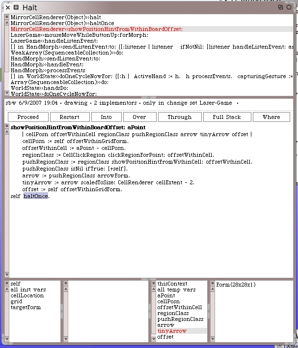
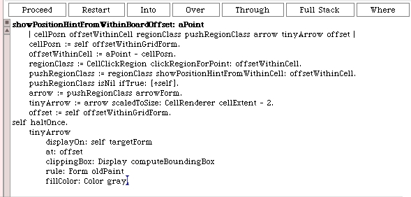
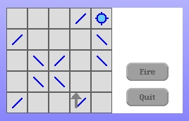

So open up a LaserGame morph, if you don't still have one open, and "sneak up" on a mirror cell with the cursor. The debugger will pop-up on the first hint arrow we want to create.
Move your debugger window over if it covers the game morph. We want to draw the hint arrow using the debugger. Modify the code directly in the debugger as follows.
After you save the modified method, within the debugger, it restarts from the top. Just single-step through the code using the "over" debugger button until you step through every line of code in the method. We don't have to concern ourselves with the Halt Once since it's already tripped for us. When I did this the game board did nothing. However, once I clicked on the control panel of the Laser Game morph (I clicked in the safe white area), the arrow appeared.
That's pretty good. We have a few tweaks to make to the arrow's position within the cell and obviously the update needs to be automatic. The clipRectangle specified in our drawing code is too generous too. We need to reduce it down from the whole Display as the clipping rectangle.
Clarification. When I describe the remaining work that needs to be done, in the paragraph above, I'm only "sketching out" the work will have to do later in this tutorial. We will continue to use iterative techniques to refine and complete this code as we work through the tutorial. Don't concern yourself, at this point, with making the update of the arrow work just yet, nor try to correct the clipRectangle update. We'll get to that later in this tutorial.
But that's good stuff. Remove the #haltOnce from your method. Save your image at this breaking point before we continue.